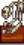

Skeletthand
| Skeletthand | |
| Ein Wunder, dass diese alten, kleinen Stücke so lange überdauert haben. | |
| Information | |
| Artefakt-Ort: | |
| Monster Drops: | |
| Andere Quellen: | |
| Museum Spende Belohnung: |  Faultier-Skelett L |
| Verkaufspreis: | |
Die Skeletthand ist ein Artefakt welches gefunden werden kann durch das:
- Ausgraben von Artefakt-Orten in dem Wäldchen oder am Strand
- Töten von Spukender Schädel
- Abbauen von Knochenadern auf der Ingwerinsel Insel-Außenstelle
Spenden
Kann dem Museum gespendet werden.
Wird sie zusammen mit der Prähistorischen Schulterplatte und dem Prähistorischen Schädel gespendet, erhält man Faultier-Skelett L
Als Geschenk
| Reaktionen der Dorfbewohner
| |
|---|---|
| Mag es | |
| Gefällt nicht | |